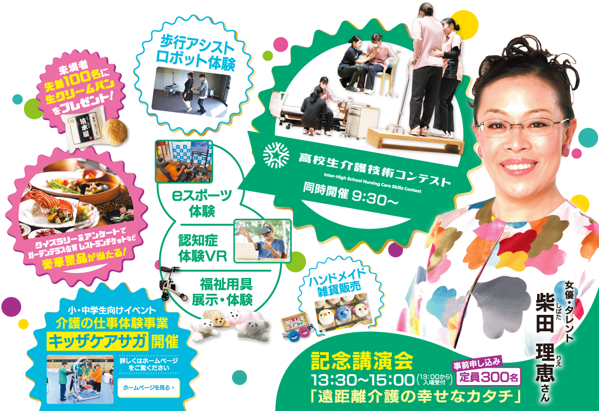
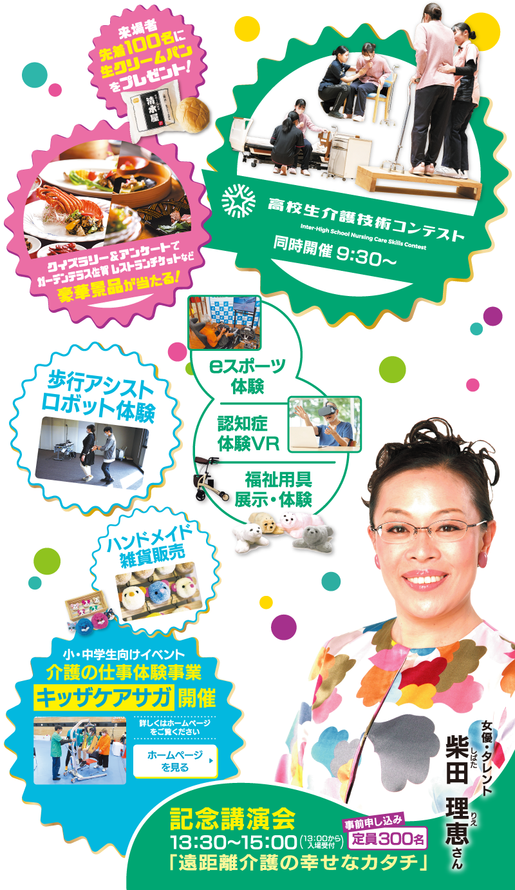
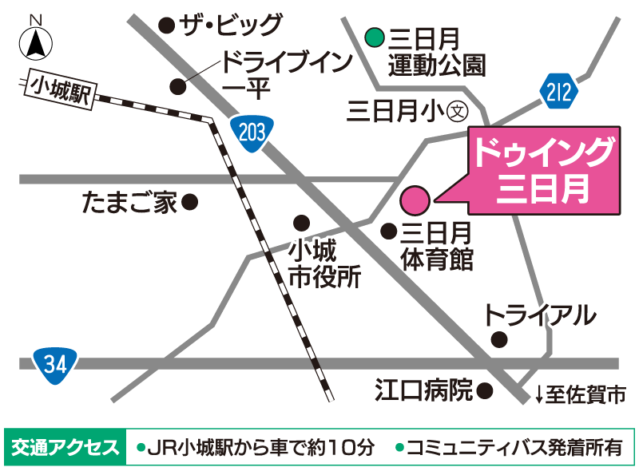

※柴田理恵さんの記念講演会には事前申し込みが必要です
柴田理恵さんの
記念講演会事前お申し込みはこちら
11月10日佐賀県小城市ドゥイング三日月で介護健康福祉フェアを開催します。
歩行アシストロボット体験や、eスポーツ体験、認知症VR体験などのができます。
さらに、来場者先着100名に生クリームパンをプレゼントします。
参加費は無料ですので、ぜひお気軽にご参加ください。
介護について理解と認識を深め、
介護サービス利用者及びその家族、介護従事者の支援するとともに、
それらを取り巻く地域社会における支えあいや交流を促進する日として制定されました。
介護サービス利用者及びその家族、介護従事者の支援するとともに、
それらを取り巻く地域社会における支えあいや交流を促進する日として制定されました。

開催に際しては、感染症防止対策を講じた上で運営を行います。会場では、喚起のため窓やドアなどを開ける場合がありますので、温度調節ができる服装でご参加ください。当日、発熱など少しでも体調に不安のある方は、ご参加を見合わせていただきますようお願いいたします。
記念講演会 出演者紹介
女優・お笑いタレント
柴田理恵さん
柴田理恵さん
富山県出身。明治大学文学部演劇学科卒業。劇団東京ヴォードヴィルショーを経て、1984年に久本雅美らとWAHAHA本舗を設立する。バラエティ、テレビドラマ、映画、ラジオと多方面で活躍中。現在、富山県観光大使、富山市特別副市長、羅臼昆布大使、あいち親善大使。
※柴田理恵さんの記念講演会には事前申し込みが必要です

〒845-0021
佐賀県小城市三日月町長神田1845
駐車場の数には限りがありますので、可能な限り公共交通機関のご利用、または乗り合わせの上、ご来場いただきますようお願いします。